전산응용기계제도기능사 (2016-07-10 기출문제)
1과목: 기계재료 및 요소
1. 6-4 황동에 철 1~2%를 첨가함으로써 강도와 내식성이 향상되어 광산기계, 선박용 기계, 화학기계 등에 사용되는 특수 황동은?
- 쾌삭 메탈
- 델타 메탈
- 네이벌 황동
- 애드머럴티 황동
(정답률: 69%)

2. 냉간 가공된 황동제품들이 공기 중의 암모니아 및 염류로 인하여 입간부식에 의한 균열이 생기는 것은?
- 저장균열
- 냉간균열
- 자연균열
- 열간균열
(정답률: 71%)
3. 탄소강에 함유된 원소 중 백점이나 헤어크랙의 원인이 되는 원소는?
- 황
- 인
- 수소
- 구리
(정답률: 68%)
4. 절삭 공구로 사용되는 재료가 아닌 것은?
- 페놀
- 서멧
- 세라믹
- 초경합금
(정답률: 60%)
5. 상온이나 고온에서 단조성이 좋아지므로 고온가공이 용이하며 강도를 요하는 부분에 사용하는 황동은?
- 톰백
- 6-4황동
- 7-3황동
- 함석황동
(정답률: 60%)
6. 철강의 열처리 목적으로 틀린 것은?
- 내부의 응력과 변형을 증가시킨다.
- 강도, 연성, 내마모성 등을 향상시킨다.
- 표면을 강화시키는 등의 성질을 변화시킨다.
- 조직을 미세화하고 기계적 특성을 향상시킨다.
(정답률: 64%)
7. 탄소강에 함유되는 원소 중 강도, 연신율, 충격치를 감소시키며 적열취성의 원인이 되는 것은?
- Mn
- Si
- P
- S
(정답률: 55%)
8. 미끄럼 베어링의 윤활 방법이 아닌 것은?
- 적하 급유법
- 패드 급유법
- 오일링 급유법
- 충격 급유법
(정답률: 77%)
9. 일반 스퍼기어와 비교한 헬리컬 기어의 특징에 대한 설명으로 틀린 것은?
- 임의의 비틀림 각을 선택할 수 있어서 축 중심거리의 조절이 용이하다.
- 물림 길이가 길고 물림률이 크다.
- 최소 잇수가 적어서 회전비를 크게 할 수가 있다.
- 추력이 발생하지 않아서 진동과 소음이 적다.
(정답률: 65%)
10. 체인 전동의 일반적인 특징으로 거리가 먼 것은?
- 속도비가 일정하다.
- 유지 및 보수가 용이하다.
- 내열, 내유, 내습성이 강하다.
- 진동과 소음이 없다.
(정답률: 81%)
2과목: 기계가공법 및 안전관리
11. 8KN의 인장하중을 받는 정사각봉의 단면에 발생하는 인장응력이 5 MPa이다. 이 정사각봉의 한 변의 길이는 약 몇 mm인가?
- 40
- 60
- 80
- 100
(정답률: 75%)
12. 회전체의 균형을 좋게 하거나 너트를 외부에 돌출시키지 않으려고 할 때 주로 사용하는 너트는?
- 캡 너트
- 둥근 너트
- 육각 너트
- 와셔붙이 너트
(정답률: 57%)
13. 핀(pin)의 종류에 대한 설명으로 틀린 것은?
- 테이퍼 핀은 보통 1/50 정도의 테이퍼를 가지며, 축에 보스를 고정시킬 때 사용할 수 있다.
- 평행핀은 분해ㆍ조립하는 부품의 맞춤면의 관계 위치를 일정하게 할 필요가 있을 때 주로 사용된다.
- 분할핀은 한쪽 끝이 2가닥으로 갈라진 핀으로 축에 끼워진 부품이 빠지는 것을 막는데 사용할 수 있다.
- 스프링 핀은 2개의 봉을 연결하기 위해 구멍에 수직으로 핀을 끼워 2개의 봉이 상대각운동을 할 수 있도록 연결한 것이다.
(정답률: 58%)
14. 기계의 운동에너지를 흡수하여 운동속도를 감속 또는 정지시키는 장치는?
- 기어
- 커플링
- 마찰차
- 브레이크
(정답률: 85%)
15. 한쪽은 오른나사, 다른 한쪽은 왼나사로 되어 양끝을 서로 당기거나 밀거나 할 때 사용하는 기계요소는?
- 아이 볼트
- 세트 스크류
- 플레이트 너트
- 턴 버클
(정답률: 55%)
16. 가공할 구멍이 매우 클 때, 구멍 전체를 절삭하지 않고 내부에는 심재가 남도록 환형의 홉으로 가공하는 방식으로 판재에 큰 구멍을 가공하거나 포신 등의 가공에 적합한 보링 머신은?
- 보통 보링머신
- 수직 보링머신
- 지그 보링머신
- 코어 보링머신
(정답률: 56%)
17. 그림과 같은 환봉의 테이퍼를 선반에서 복식공구대를 회전시켜 공하려 할 때 공구대를 회전시켜야 할 각도는? (단, 각도는 아래 표를 참고한다.)
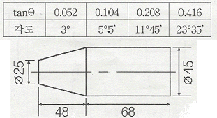
- 3
- 5°5‘
- 11°45’
- 23°35‘
(정답률: 63%)
18. 전해 연마의 특징에 대한 설명으로 틀린 것은?
- 가공면에 방향성이 없다.
- 복잡한 형상의 제품은 가공할 수 없다.
- 가공 변질층이 없고 평활한 가공면을 얻을 수 있다.
- 연질의 알루미늄, 구리 등도 쉽게 광택면을 가공할 수 있다.
(정답률: 60%)
19. CNC 선반에서 휴지기능(G04)에 관한 설명으로 틀린 것은?
- 휴지기능은 홈 가공에서 많이 사용된다.
- 휴지기능은 진원도를 향상시킬 수 있다.
- 휴지기능은 깨끗한 표면을 가공할 수 있다.
- 휴지기능은 정밀한 나사를 가공할 수 있다.
(정답률: 52%)
20. 금형부품과 같은 복잡한 형상을 고정밀도로 가공할 수 있는 연삭기는?
- 성형 연삭기
- 평면 연삭기
- 센터리스 연삭기
- 만능 공구 연삭기
(정답률: 53%)
21. 그림과 같이 테이퍼를 가공할 때 심압대의 편위량은 몇 mm 인가?
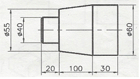
- 3.0
- 3.25
- 3.75
- 5.25
(정답률: 50%)
22. 마이크로미터의 구조에서 구성부품에 속하지 않는 것은?
- 앤빌
- 스핀들
- 슬리브
- 스크라이버
(정답률: 55%)
23. 윤활의 목적과 가장 거리가 먼 것은?
- 냉각 작용
- 방청 작용
- 청정 작용
- 용해 작용
(정답률: 62%)
24. 기어 절삭기로 가공된 기어의 면을 매끄럽고 정밀하게 다듬질하는 가공은?
- 래핑
- 호닝
- 폴리싱
- 기어 셰이빙
(정답률: 56%)
25. 밀링 가공에서 분할대를 이용하여 원주면을 등분하려고 한다. 직접 분할법에서 직접 분할핀의 구멍수는?
- 12개
- 24개
- 30개
- 36개
(정답률: 65%)
3과목: 기계제도
26. 제품의 표면 거칠기를 나타낼 때 표면 조직의 파라미터를 “평가된 프로파일의 산술 평균 높이”로 사용하고자 한다면 그 기호로 옳은 것은 ?
- Rt
- Rq
- Rz
- Ra
(정답률: 59%)
27. 다음은 어떤 물체를 제 3각법으로 투상한 것이다. 이 물체의 등각 투상도로 가장 적합한 것은?
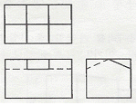
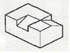
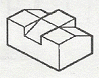
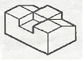
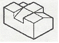
(정답률: 70%)
28. 가는 실선으로만 사용하지 않는 선은?
- 지시선
- 절단선
- 해칭선
- 치수선
(정답률: 65%)
29. 재료의 기호와 명칭이 맞는 것은?
- STC : 기계 구조용 탄소 강재
- STKM : 용접 구조용 압연 강재
- SPHD : 탄소 공구 강재
- SS : 일반 구조용 압연 강재
(정답률: 59%)
30. 도면이 구비하여야 할 구비 조건이 아닌 것은?
- 무역 및 기술의 국제적인 통용성
- 제도자의 독창적인 제도법에 대한 창의성
- 면의 표면, 재료, 가공 방법 등의 정보성
- 대상물의 도형, 크기, 모양, 자세, 위치 등의 정보성
(정답률: 78%)
31. 투상도를 표시하는 방법에 관한 설명으로 가장 옳지 않은 것은?
- 조립도 등 주로 기능을 나타내는 도면에서는 대상물을 사용하는 상태로 표시한다.
- 물체의 중요한 면은 가급적 투상면에 평행하거나 수직이 되도록 표시한다.
- 물품의 형상이나 기능을 가장 명료하게 나타내는 면을 주 투상도가 아닌 보조 투상도로 선정한다.
- 가공을 위한 도면은 가공량이 많은 공정을 기준으로 가공할 때 놓여진 상태와 같은 방향으로 표시한다.
(정답률: 67%)
32. 다음 내용이 설명하는 투상법은?
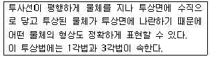
- 투시 투상법
- 등각 투상법
- 사 투상법
- 정 투상법
(정답률: 60%)
33. 아래 그림과 같은 치수 기입 방법은?
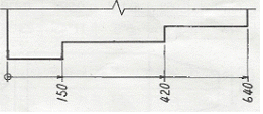
- 직렬 치수 기입 방법
- 병렬 치수 기입 방법
- 누진 치수 기입 방법
- 복합 치수 기입 방법
(정답률: 62%)
34. 기계관련 부품에서 ∅80H7/g6로 표기된 것의 설명으로 틀린 것은?
- 구멍 기준식 끼워 맞춤이다.
- 구멍의 끼워 맞춤 공차는 H7이다.
- 축의 끼워 맞춤 공차는 g6이다.
- 억지 끼워 맞춤이다.
(정답률: 70%)
35. 그림에서 기하공차 기호로 기입할 수 없는 것은?
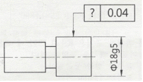
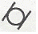
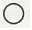
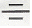
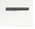
(정답률: 50%)
36. 모떼기를 나타내는 치수 보조 기호는?
- R
- SR
- t
- C
(정답률: 75%)
37. KS규격에서 규정하고 있는 단면도의 종류가 아닌 것은?
- 온 단면도
- 한쪽 단면도
- 부분 단면도
- 복각 단면도
(정답률: 76%)
38. 제3각법으로 그린 투상도에서 우측면도로 옳은 것은?
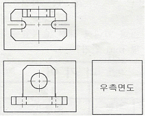
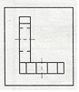
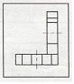
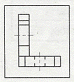
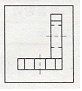
(정답률: 67%)
39. 열처리, 도금 등 특별한 요구사항을 적용할 수 있는 범위를 표시하는 데 사용하는 특수 지정선은?
- 굵은 실선
- 가는 실선
- 굵은 파선
- 굵은 1점 쇄선
(정답률: 57%)
40. 도면에서 구멍의 치수가
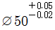
로 기입되어 있다면 치수공차는?- 0.02
- 0.03
- 0.⑤
- 0.07
(정답률: 69%)
41. 도면관리에 필요한 사항과 도면내용에 관한 중요한 사항이 기입되어 있는 도면 양식으로 도명이나 도면번호와 같은 정보가 있는 것은?
- 재단마크
- 표제란
- 비교눈금
- 중심마크
(정답률: 78%)
42. 기하 공차의 종류와 기호 설명이 잘못된 것은?
- : 평면도 공차
- : 원통도 공차
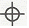
: 위치도 공차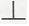
: 직각도 공차
(정답률: 66%)
43. 다음 면의 지시기호 표시에서 제거가공을 허락하지 않는 것을 지시하는 기호는?
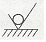
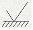
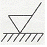
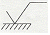
(정답률: 68%)
44. 도면을 작성할 때 쓰이는 문자의 크기를 나타내는 기준은?
- 문자의 폭
- 문자의 높이
- 문자의 굵기
- 문자의 경사도
(정답률: 67%)
45. 다음 중 억지 끼워맞춤에 속하는 것은?
- H8/e8
- H7/t6
- H8/f8
- H6/k6
(정답률: 57%)
46. 축을 제도하는 방법에 관한 설명으로 틀린 것은?
- 긴 축은 단축하여 그릴 수 있으나 길이는 실제 길이를 기입한다.
- 축은 일반적으로 길이 방향으로 절단하여 단면을 표시한다.
- 구석 라운드 가공부는 필요에 따라 확대하여 기입할 수 있다.
- 필요에 따라 부분 단면은 가능하다.
(정답률: 60%)
47. 관의 결합방식 표현에서 유니언식을 나타내는 것은?
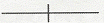
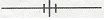
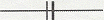
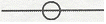
(정답률: 64%)
48. 스퍼 기어의 도시방법에 대한 설명으로 틀린 것은?
- 축에 직각인 방향으로 본 투상도를 주 투상도로 할 수 있다.
- 잇봉우리원은 굵은 실선으로 그린다.
- 피치원은 가는 1점 쇄선으로 그린다.
- 축 방향으로 본 투상도에서 이골원은 굵은 실선으로 그린다.
(정답률: 47%)
49. 다음 중 베어링의 안지름이 17mm인 베어링은?
- 6303
- 32307K
- 6317
- 607U
(정답률: 66%)
50. 스프로킷 휠의 피치원을 표시하는 선의 종류는?
- 굵은 실선
- 가는 실선
- 가는 1점 쇄선
- 가는 2점 쇄선
(정답률: 59%)
51. 키의 호칭이 다음과 같이 나타날 때 설명으로 틀린 것은?
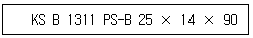
- 키에 관련한 규격은 KS B 1311 에 따른다.
- 평행키로서 나사용 구멍이 있다.
- 키의 끝부가 양쪽 둥근형이다.
- 키의 높이는 14mm 이다.
(정답률: 52%)
52. 나사의 제도방법을 바르게 설명한 것은?
- 수나사와 암나사의 골 밑은 굵은 실선으로 그린다.
- 완전 나사부와 불완전 나사부의 경계는 가는 실선으로 그린다.
- 나사 끝면에서 본 그림에서 나사의 골밑은 가는 실선으로 원주의 3/4에 가까운 원의 일부로 그린다.
- 수나사와 암나사가 결합되었을 때의 단면은 암나사가 수나사를 가린 형태로 그린다.
(정답률: 47%)
53. 스프링 제도에서 스프링 종류와 모양만을 도시하는 경우 스프링 재료의 중심선은 어느 선으로 나타내야 하는가?
- 굵은 실선
- 가는 1점 쇄선
- 굵은 파선
- 가는 실선
(정답률: 36%)
54. 다음 표준 스퍼 기어에 대한 요목표에서 전체 이 높이는 몇 mm 인가?
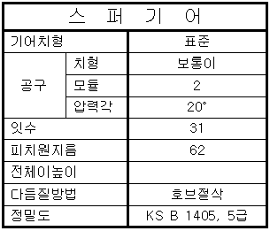
- 4
- 4.5
- 5
- 5.5
(정답률: 60%)
55. ISO 규격에 있는 관용 테이퍼 나사로 테이퍼 수나사를 표시하는 기호는?
- R
- Rc
- PS
- Tr
(정답률: 45%)
56. 전체 둘레 현장 용접을 나타내는 보조 기호는?
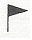
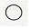
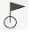
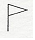
(정답률: 69%)
57. CAD시스템에서 도면상 임의의 점을 입력할 때 변하지 않는 원점(0,0)을 기준으로 정한 좌표계는?
- 상대 좌표계
- 상승 좌표계
- 증분 좌표계
- 절대 좌표계
(정답률: 77%)
58. 컴퓨터 입력장치의 한 종류로 직사각형의 판에 사용자가 손에 잡고 움직일 수 있는 펜 모양의 스타일러스 혹은 버튼이 달린 라인 커서 장치의 2가지 부분으로 구성되며 펜이나 커서의 움직임에 대한 좌표 정보를 읽어서 컴퓨터에 나타내는 장치는?
- 디지타이저(digitizer)
- 광학 마크 판독기(OMR)
- 음극선관(CRT)
- 플로터(plotter)
(정답률: 61%)
59. 데이터를 표현하는 최소단위를 무엇이라고 하는가?
- byte
- bit
- word
- file
(정답률: 71%)
60. 다음이 설명하는 3차원 모델링 방식은?
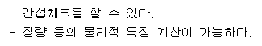
- 와이어 프레임 모델링
- 서피스 모델링
- 솔리드 모델링
- DATA 모델링
(정답률: 64%)